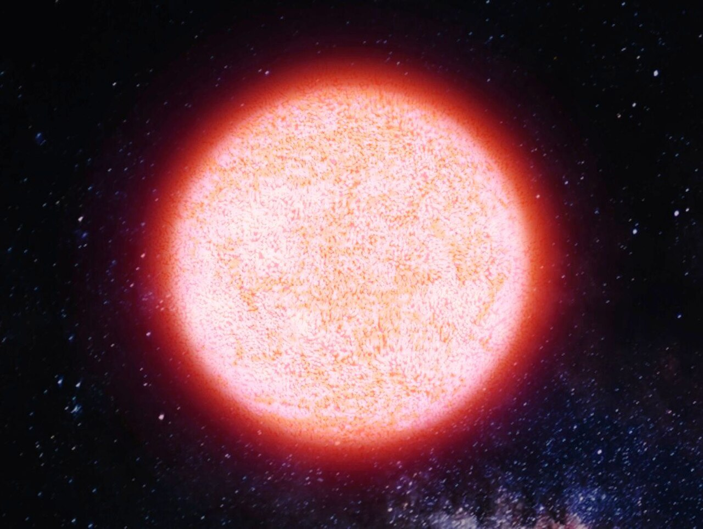
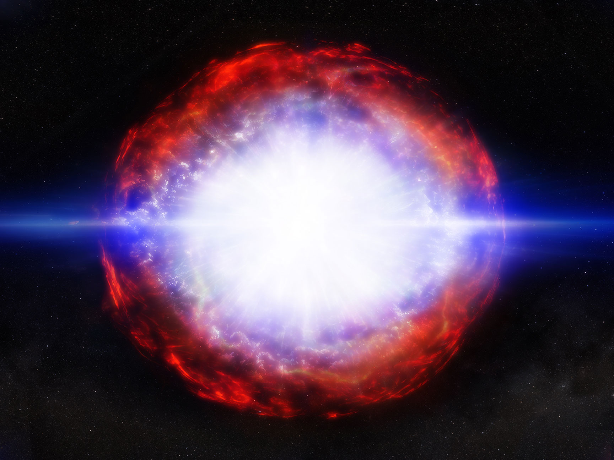
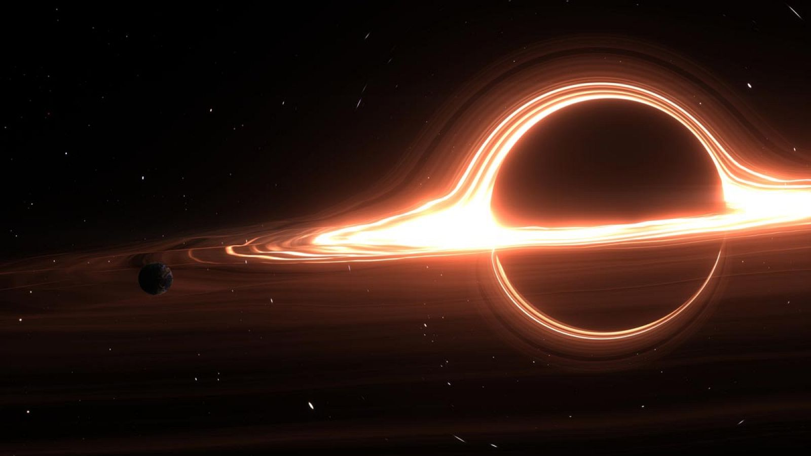

Llamadas comúnmente como Supergigantes, son estrellas con una masa mucho mayor que la del Sol, generalmente más de 8 veces su masa. Estas estrellas son extremadamente luminosas y calientes. El radio de las supergigantes puede estar entre los 30 y los 500 radios solares, aunque en ocasiones puede superar los 1000 radios solares. Usualmente, las estrellas más fáciles de observar a simple vista en el cielo nocturno son supergigantes, como Betelgeuse y Antares. Suelen ser de color azul al inicio de su vida, pero a medida que envejecen, pueden volverse rojas o amarillas. Este tipo de estrellas son mucho más raras que las estrellas de secuencia principal, pero tienen un impacto significativo en la evolución del universo debido a su corta vida y su papel en la formación de elementos pesados, aunque sean las estrellas que menos metales pesados contengan en su núcleo. Su estudio es crucial para comprender la evolución estelar y la dinámica de las galaxias.
Durante su secuencia principal, las estrellas masivas queman hidrógeno en sus núcleos a través de la fusión nuclear, lo que genera una enorme cantidad de energía y luz. Estas estrellas son capaces de mantener su equilibrio durante un tiempo relativamente corto en comparación con las estrellas de menor masa, debido a su mayor tasa de fusión. Su gigantesco tamaño se debe a la intensa presión y temperatura en sus núcleos, que permiten la fusión de elementos más pesados a medida que agotan su combustible de hidrógeno. Debido a su gran masa, estas estrellas consumen su energía a una velocidad abismal, produciendo enormes cantidades de luz y calor. Por ejemplo, la estrella Naos, posee una luminosidad aproximadamente 55,000 veces mayor que la del Sol. Sin embargo, este enorme poder conlleva un precio, pues son el tipo de estrella con la vida más corta, viviendo solo entre 3 y 100 millones de años, antes de agotar su combustible y evolucionar hacia las etapas finales de su vida. La mayoría de las estrellas masivas comienzan su vida como estrellas azules, debido a su alta temperatura superficial, que puede superar los 30,000 Kelvin. A medida que envejecen y agotan su combustible de hidrógeno, estas estrellas pueden evolucionar hacia supergigantes rojas o amarillas, dependiendo de su masa inicial y otros factores.
Cuando una estrella masiva agota el hidrógeno en su núcleo, comienza a fusionar elementos más pesados, como el helio, carbono y oxígeno. Este proceso provoca que la estrella se expanda y enfríe, convirtiéndose en una supergigante roja. Un ejemplo famoso de supergigante roja es Betelgeuse, ubicada en la constelación de Orión. Las supergigantes rojas son algunas de las estrellas más grandes y luminosas del universo, con radios que pueden superar los 1,000 radios solares. A pesar de su tamaño, estas estrellas son relativamente frías en comparación con otras estrellas masivas, con temperaturas superficiales que oscilan entre 3,500 y 4,500 Kelvin. La baja temperatura efectiva de estas estrellas comparada con la de las supergigantes azules, como se expresó anteriormente, se debe a que la densidad, es decir, la cantidad de masa en relación con el volumen que ocupan dichos cuerpos celestes, es muy baja, por lo que se puede decir también, que la densidad de las supergigantes rojas es mucho menor que la de las gigantes azules; el diámetro de estos astros es en consecuencia muy grande, de cientos de veces el del Sol o incluso mucho mayor. Esta es la etapa más corta en la vida de una estrella masiva, ya que las supergigantes rojas suelen vivir solo unos pocos millones de años. Por ejemplo, Betelgeuse tiene una edad estimada de alrededor de 10 millones de años, y estiman que le quedan entre 10 000 y 100 000 años de vida. Es debido a esta corta esperanza de vida que es uno de los tipos de estrellas más raros de observar. Cuando esta estrella agota su combustible, da lugar a uno de los eventos más espectaculares del universo: la supernova.
La supergigante roja ha agotado su combustible y ya no puede sostenerse contra la gravedad, lo que provoca un colapso catastrófico de su núcleo. Este colapso genera una onda de choque que expulsa las capas externas de la estrella al espacio, creando una explosión extremadamente brillante conocida como supernova. Es una explosión que puede manifestarse de forma notable en el espacio, incluso a simple vista. Las supernovas son eventos raros, pero cuando ocurren, pueden superar la luminosidad de toda una galaxia durante un breve período. La energía liberada en una supernova es tan intensa que puede iluminar el espacio circundante y generar ondas de choque que afectan a las estrellas y nubes de gas cercanas. Un sistema solar y sus alrededores pueden ser consumidos por el radio de la explosión, pero las capas externas de la estrella son expulsadas al espacio, enriqueciendo el medio interestelar con elementos pesados que se formaron durante la vida de la estrella y en la explosión misma. Estos elementos son esenciales para la formación de nuevas estrellas, planetas y, eventualmente, la vida. La supernova es un evento catastrófico y estrepitoso, que sin embargo, es crucial en la evolución del universo, ya que contribuye a la dispersión de elementos pesados y a la formación de nuevas generaciones de estrellas. El fin de la vida de una estrella masiva es el momento de su vida donde más brilla y más energía libera, dejando una huella indeleble en el cosmos. A pesar de ser el final de su vida, ayuda a crear nuevas estrellas y planetas, cerrando el ciclo de la vida estelar. Finalmente, los residuos de la supernova son la liberación de todos sus gases y su núcleo colapsado, que pueden formar un objeto extremadamente denso, como una estrella de neutrones o un agujero negro.
Cuando la explosión de la supernova ha terminado de expandirse, los restos de la estrella se dispersan por el espacio. Estos residuos pueden formar una nebulosa, que es una nube de gas y polvo que brilla con la luz de las estrellas cercanas. Con el tiempo, esta nebulosa puede colapsar bajo su propia gravedad y dar lugar a la formación de nuevas estrellas y sistemas planetarios. Este destino es muy parecido al de estrellas más pequeñas, pero con un origen mucho más violento. La estrella, ya sin energía alguna en su núcleo, implosiona según su gravedad, ocasionando alguna de las dos rutas posibles para una supernova: una estrella de neutrones o un agujero negro. Una estrella de neutrones se formará si la masa inicial de la estrella fue mayor a 30 masas solares. Es un tipo de estrella compuesta, como dice su nombre, principalmente de neutrones, más otro tipo de partículas tanto en su corteza sólida de hierro, como en su interior. Se forman cuando el hundimiento del núcleo de una estrella masiva se detiene a causa de los neutrones en su interior. Son extremadamente densas, con una masa superior a la del Sol concentrada en un volumen similar al de una ciudad. Esto significa que una cucharadita de material de una estrella de neutrones pesaría miles de millones de toneladas en la Tierra. Las estrellas de neutrones también tienen campos magnéticos intensos y pueden girar a velocidades muy altas, lo que las convierte en fuentes de radiación electromagnética, como los púlsares, un tipo de estrella de neutrones que emite radiación en forma de pulsos regulares, en forma de rayos X y rayos gamma.
Por otro lado, si la masa inicial de la estrella fue mayor a 40 masas solares, el núcleo colapsado puede formar un agujero negro. Esto sucede cuando el núcleo remanente de la estrella, tiene una masa que sobrepasa el límite de la misma. Su densidad alcanza escalas desorbitantes, lo que provoca su colapso. Su interior contiene una cantidad de masa tan densa y tan concentrada, que genera un fortísimo campo gravitacional, impidiendo que cualquier cosa, incluso la luz, pueda escapar de él. Los agujeros negros también pueden producir un tipo de radiación, como las estrellas de neutrones, pero esta es producida por su disco de acreción, no por su centro. Estos gigantescos objetos son algunos de los más enigmáticos y fascinantes del universo, desafiando nuestra comprensión de la física, pues crean una singularidad conocida como "curvatura del espacio-tiempo", la cual la ciencia actual, aún se esfuerza por explicar. Se conjetura que en el centro de cada galaxia, entre ellas, la Vía Láctea, hay agujeros negros supermasivos. En palabras más simples, un agujero negro es el resultado final de la acción de la gravedad extrema llevada hasta el límite posible. La misma gravedad que mantiene a la estrella estable, la empieza a comprimir hasta el punto que los átomos comienzan a aplastarse. Los electrones en órbita se acercan cada vez más al núcleo atómico y acaban fusionándose con los protones. Este proceso comportaría la emisión de un número elevado de neutrinos. El resultado final es una estrella de neutrones. En este punto, dependiendo de la masa de la estrella, el plasma de neutrones dispara una reacción en cadena irreversible, la gravedad aumenta enormemente al disminuirse la distancia que había originalmente entre los átomos. Las partículas de neutrones implosionan, aplastándose más, dando como resultado un agujero negro, que es una región del espacio-tiempo limitada por el llamado horizonte de sucesos. No cabe duda, que las estrellas masivas, aún después de su muerte, continúan influyendo en el universo de maneras sorprendentes y complejas.